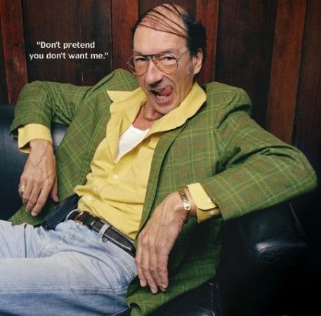
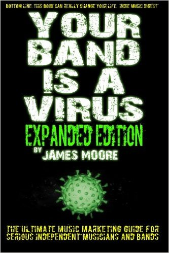
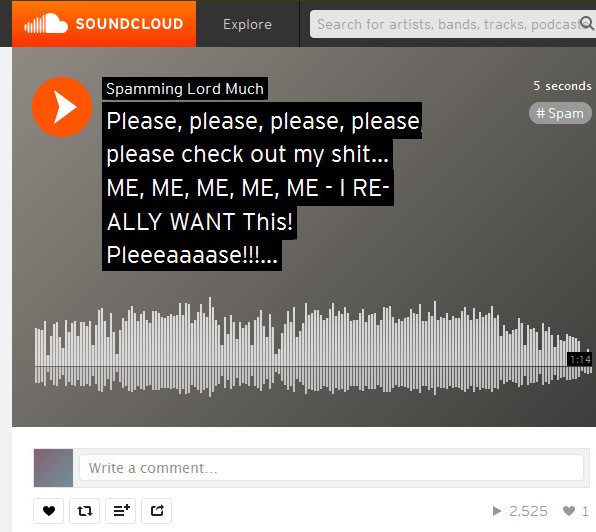
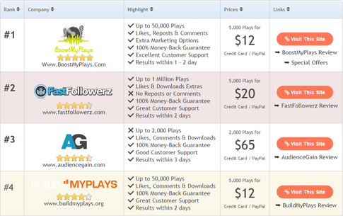
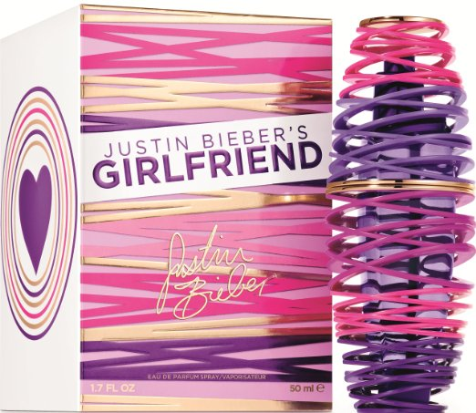
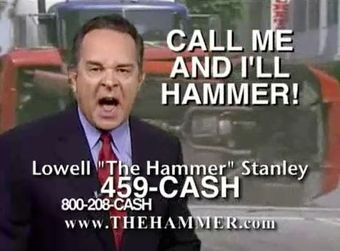
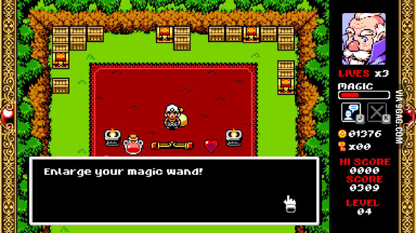
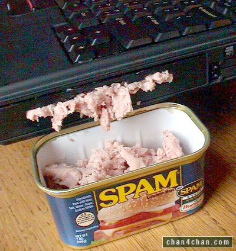
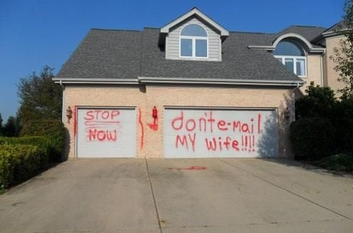

Racolage is a record label that releases only by spam email. [read more]
“When people leave your show, are they going to remember you as that person with good lyrics and a good voice? Or will they remember you as that person who stood out and outshone all the other performing acts that night?” [read more]
“As a musician you want to be able to reach your target audience. You want to be the name on everyone’s lips. You want your brand of music to hit the airwaves and make instant impact. [...] The opportunity to have the crowds cheering and chanting your name as you become as necessary as air to your teeming fans beckons.” [read more]


“Musicians today are accustomed to waiting in line for just about everything. After all, it’s busy as hell out there. While it’s necessary to wait in some lines, and good results can come of that, if you merely play by the rules and wait in lines you’ll get stagnancy, and that isn’t a very fun gift to open up for Christmas.” [read more]
“What separates you from the many posers is your amazing music. Your thing. Your spin.” [read more]
“Breaking out in the music business is hard, especially online where everyone and their cousin has a band and a website promoting it.” [read more]
“Music marketing is a rapidly evolving challenge in a saturated industry; so how can you successfully promote your music online?” [read more]
“When you invest your time and money into your music there should be an effective outcome.” [read more]

“First off, let’s be realistic, not all music is good music, so the results may vary for those who have not quite honed your craft. However, if you have the ambition and the know-how, you can take your career to new heights with less effort than you think. For those of you with raw talent, your music just needs to be heard by as many people as possible, and the rest will be history.” [read more]
“The sad truth is that the quality of your music won't always be enough to get you noticed. Try doing a blog, a quiz, a gimmick – anything that will make your website or profile a bit different and interesting.” [read more]

“One of the biggest misconceptions held by unsigned artists is that great music will always find its way to the masses. McDonald’s, Papa John’s and Subway do not make the best burgers, pizza or grinders, but they are most recognizable brands because they do the best job of MARKETING and PROMOTING their product. Your music is also a product and with every successful business venture, you need good branding.” [read more]
“You should see that you're not just a musician or a band member but that you are a product. [...] Think of yourself as Jessica Simpson or Kim Kardashian. These women understand that they are brands and can put their names on a product, from shoes to lotion, knowing that it will sell big just because of who they are. ” [read more]
“I don't care if the ghost of 2Pac himself came back and made them songs for you. You need more product. ”[read more]


“The music business operates like any other business. You need to promote your product. The best and least expensive way to build any business is by “word of mouth” and it is also the best way to build your brand in the music industry as well. This is a principle I used in my first management job operating a tax office. I was able to turn a dying office into one that saw the third highest growth in new clients in the country.” [read more]
“Some [...] producers promote their music in an obnoxious, spammy way on social media. [...] Or, you have to wade through links to songs that aren’t even the kind of music you like. What a bunch of spam.
It’s irritating. It’s intrusive. It’s ineffective. It’s bad promotion.” [read more]
“It's 2015, homey. You HAVE to know how to navigate the social media game or in many cases... you're dead in the water.” [read more]

“If I told you there was a great way to promote your band all over the net, for free, you'd probably think, 'Yeah, what's the catch?' ” [read more]
“Music artists who are just starting out need to find some of the easiest ways of getting their music online and promoting it for the most success. It can now be done from the comfort of your own home, which makes your promotion easy and cheap.” [read more]


Racolage is a record label that releases only by spam email. [read more]